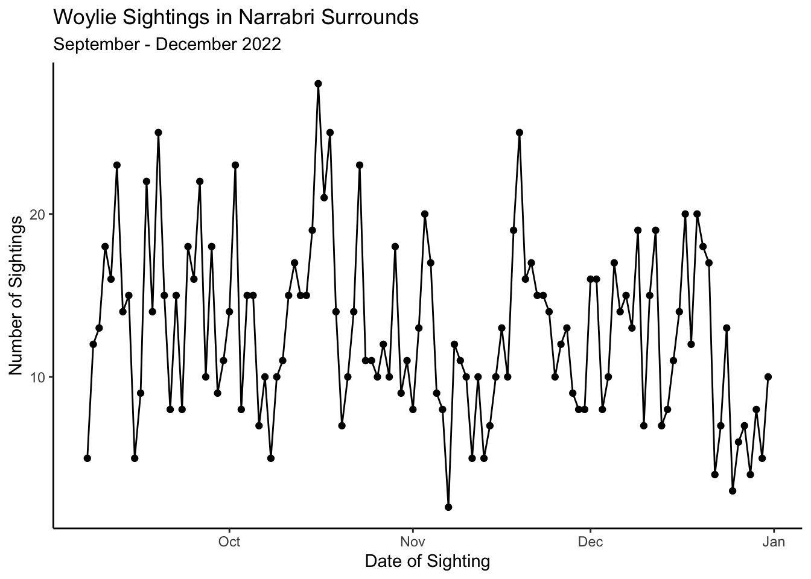
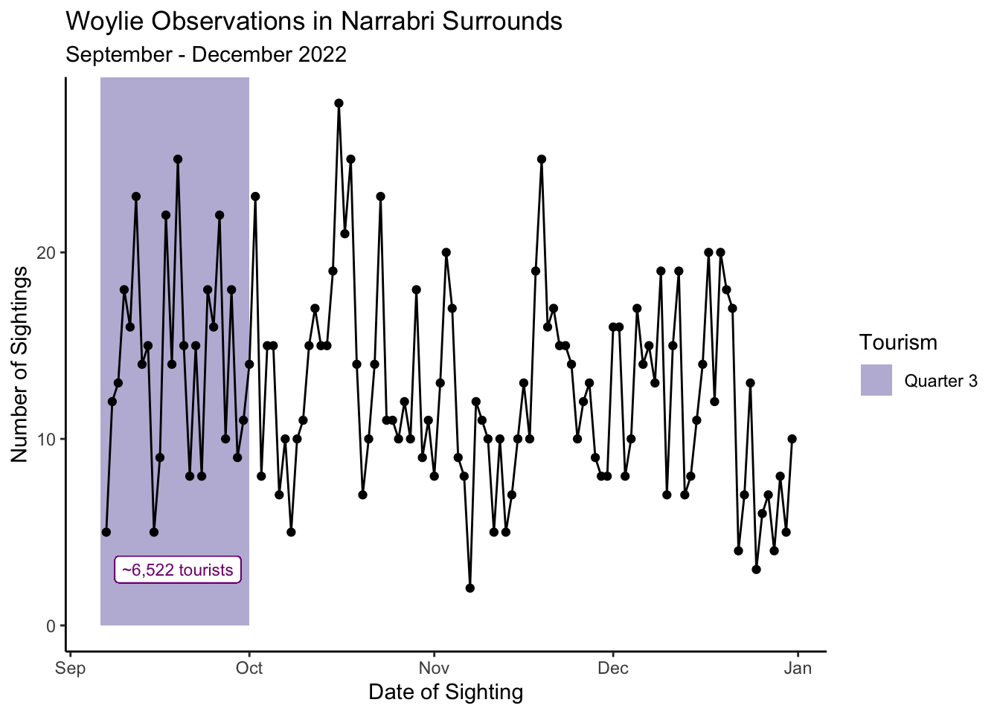
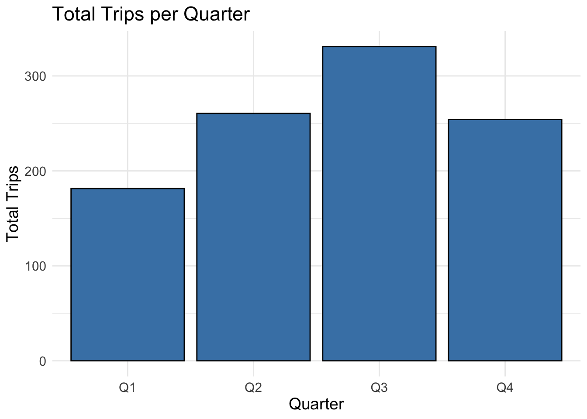
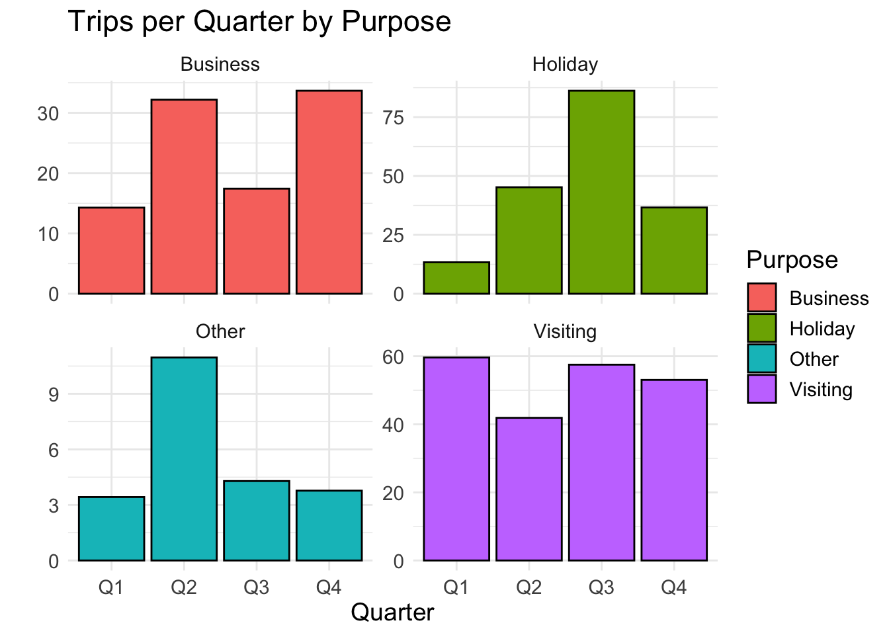

The Brush-Tailed Bettong or Woylie (Bettongia penicillata ogilbyi) is a remarkable Australian marsupial with unique characteristics. It thrives in a diverse range of habitats, including forests, woodlands, and shrublands, where dense vegetation offers shelter and sustenance. This nocturnal creature is most active during the night and rests in leafy grass nests during the day. Unfortunately, the Woylie has faced a perilous decline, with its population plummeting by more than 90% in the past two centuries. This decline can be attributed to various factors, including habitat loss, introduced predators, and disease. Consequently, the Woylie is currently classified as a critically endangered species, receiving protection from the Australian government. Most of the remaining Woylie population resides in wildlife sanctuaries, where they can live free from predators. While the Woylie is not a common attraction for tourists due to its elusive nature, there are a few places like the Perth Zoo and the Australian Wildlife Conservancy’s Scotia Sanctuary where visitors can catch a glimpse of this unique marsupial.
From this data we expect the following results:
“We expect to observe a decline in Woylie occurrences over the past 20 years, reflecting their critically endangered status.”
“The dataset is likely to show fewer sightings in the wild over recent years, given that Woylies are mostly found in protected sanctuaries.”
“Woylies are expected to have limited sightings near weather stations, as their habitat preferences are specific to certain regions within Australia.”
“We anticipate a seasonal pattern in sightings, with more occurrences during specific times of the year, possibly correlating with breeding seasons or favorable climate conditions.”
“It is unlikely that there will be a significant number of sightings in urban areas, as Woylies tend to avoid human-populated regions due to habitat disturbance.”
2 Data description
2.1 Species data
To ensure a robust foundation for the analysis, occurrence records of the Brush-Tailed Bettong or Woylie (Bettongia penicillata ogilbyi) were obtained from the Atlas of Living Australia (ALA) database using the functions of the galah R package.
This dataset includes essential information, such as date, time, and collector identification details, and comprises 13 variables and 2,276 observations across Australia as of the current report.
The code to derive the species data can be viewed below and the data dictionary of the variables can be seen in Figure 1.
Code
# load occurence records for woylie from ALAgalah_config(email ="aran0026@student.monash.edu")woylie <-galah_call() %>%galah_identify("Bettongia penicillata ogilbyi") %>%galah_select(group =c("basic", "event")) %>%atlas_occurrences()# save data as a csv in data-raw folderwrite.csv(woylie, file ="data-raw/woylie.csv")
Data Dictionary for the Woylie dataset
Variable
Explained
scientificName
The scientific name of the observed species.
taxonConceptID
The taxonomy website ID.
recordID
The record ID of each observation.
dataResourceName
The data resource associated with the observation.
occurenceStatus
The occurrence status: Present.
eventDate
Recorded sighting date in the format YYYY-MM-DD.
decimalLatitude
Latitude value of sighting in decimal format.
decimalLongitude
Longitude value of sighting in decimal format.
eventTime
Time of the event recorded in the format hh:mm:ss.
eventID
The event ID of each observation.
eventRemarks
Any additional remarks or comments related to the observation.
samplingEffort
The number of nights spent on trapping activities.
samplingProtocol
The protocol that was used to sample the species
Figure 1: Variable definitions for the Woylie dataset
2.2 Tourism data
In addition, to conduct an analysis on ecotourism of the Woylie, tourism data from Tourism Research Australia (TRA) was obtained.
This dataset includes spatial, temporal, and trip information. It comprises 4 variables and 1,228,000 observations covering Quarter 1 of 1998 to Quarter 4 of 2022 across all Australian Statistical Area Level 2 (SA2) regions of Australia.
The data dictionary of the variables can be seen in Figure 2.
Data Dictionary for the Tourism dataset
Variable
Explained
Quarter
The year and quarter of the observation in the format YYYY Q, e.g., Q1, Q2, Q3, or Q4.
Region
The Australian Statistical Area Level 2 (SA2) region of the observation.
Purpose
The purpose of the trip, categorised as Holiday, Visiting friends and relatives, Business, or Other reason.
Trips
The total number of trips in thousands (’000).
Figure 2: Variable definitions for the Tourism dataset
3 Initial data analysis
3.1 Species data
In preparation for the forthcoming analysis, an Initial Data Analysis (IDA) was conducted on the species data. This involved removing a few unnecessary columns and systematically saving only the wild sightings.
After reducing the dataset, variable types and missing values were checked, as depicted in Figure Figure 3. There were no missing values that were significantly of interest or required cleaning.
Code
# view missing variables and variable typesvisdat::vis_dat(WILD_THING_woylie)
Figure 3: Visualising the data set using the visdat function.
3.2 Weather data
Exploring the correlation between weather conditions and Woylie sightings can yield valuable insights into their behavior. To conduct this analysis, it would be useful to first identify the locations where Woylies are most frequently found and then obtain the weather data from the nearest weather stations.
The Global Historical Climatology Network (GHCN) database contains weather station data that are valuable for analysing trends in weather patterns and precipitation. This data can be obtained using the rnoaa package.
Code
# downloading the coordinates of Australian weather stationsaus_stations <-ghcnd_stations() |>filter(str_starts(id, "ASN")) |>filter(last_year >=2020) |>mutate(wmo_id =as.numeric(wmo_id),name =str_to_lower(name)) |>select(-state,-gsn_flag) |>filter(element %in%c("PRCP", "TMAX", "TMIN")) |>nest(element:last_year) |>rowwise() |>filter(nrow(data) ==3) |>select(-data)
Utilising an interactive Leaflet map of Woylie sightings allows for the identification of the nearest weather stations to the clusters of Woylie sightings.
Code
# k-means clusteringset.seed(383724)coords_matrix <- WILD_THING_woylie %>%select(decimalLongitude, decimalLatitude) %>%as.matrix()num_clusters <-5# number of clusterskmeans_result <-kmeans(coords_matrix, centers = num_clusters)# extract clustersWILD_THING_woylie$cluster <- kmeans_result$cluster# number of sightings in each clustercluster_counts <- WILD_THING_woylie %>%group_by(cluster) %>%summarise(num_sightings =n())max_count <-max(cluster_counts$num_sightings)normalized_counts <- cluster_counts$num_sightings / max_countscaled_radius <- normalized_counts *20# add circle markers for each sightingmap_clusters <-leaflet(data = WILD_THING_woylie) %>%addTiles() map_clusters <- map_clusters %>%addCircleMarkers(lng =~decimalLongitude, lat =~decimalLatitude, popup =~paste("Sighting Date: ", format(eventDate, "%Y-%m-%d")), # Popup textradius =~scaled_radius[cluster], #scaled radius based on the clustercolor ="#C94A53", fillOpacity =0.7 )# view the map of clustersmap_clusters
Figure 4: The five highest clusters of Woylie sightings.
As demonstrated in Figure 4, the five closest weather stations are:
Weather Station ID: ASN00020028, which is closest to the Danggali Wilderness Protection area.
Weather Station ID: ASN00023373, which is closest to the Yookamura Private Nature Reserve.
Weather Station ID: ASN00018192, which is closest to the sightings near Port Lincoln at the Lincoln National Park.
Weather Station ID: ASN00076031, which is closest to the sightings at Mallee Cliffs National Park.
Weather Station ID: ASN00054038, located near the sightings at Pilliga East State Forest.
The highest number of Woylie sightings was recorded in Pilliga East State Forest, and as a result, the weather data to be obtained will be from the nearest weather station, which is the Narrabri Airport weather station.
This weather data can then be merged with Woylie observation data to create a comprehensive dataset for use in Section 4.2.
Code
# rename eventDate as date for convenienceWILD_THING_woylie <- WILD_THING_woylie %>%rename(date = eventDate)# classifying the date columns as DateWILD_THING_woylie$date <-as.Date(WILD_THING_woylie$date, origin ="1970-01-01")narrabri$date <-as.Date(narrabri$date, origin ="1970-01-01")# filter observations in cluster 1 as it is the largestwoylie_most <- WILD_THING_woylie %>%filter(cluster ==1)# join the data sets by datewoylie_stations <- narrabri %>%left_join(woylie_most, by ="date")# tidy data furtherwoylie_stations <- woylie_stations %>%# remove observations based on duplicate record IDsfilter(!duplicated(recordID) |is.na(recordID)) %>%# create the sightings columnmutate(sightings =ifelse(is.na(scientificName), 0, 1))# save this as an rda filesave(woylie_stations, file ="data/woylie_stations.rda")
4 Exploratory data analysis
4.1 Exploration of Woylie Sightings against intial expectations
Code
# load the wild sightings data back inload(file ="data/WILD_THING_woylie.rda")
In this section, we will delve into the exploratory data analysis of Woylie sightings, focusing on verifying our expectations through data visualization and analysis. Furthermore, we will evaluate whether visual inference techniques support or contradict our initial assumptions.
Now, let’s move forward with exploring the data visually to acquire meaningful insights into the behavior and distribution of the Woylie.
4.1.1 Expectation 1: Trend in Woylie Sightings
Code
# Code for time series plotggplot(WILD_THING_woylie, aes(x = eventDate)) +geom_line(stat="count") +# Count the number of sightings per datelabs(title ="Trend in Woylie Sightings Over Time",x ="Year",y ="Number of Sightings") +theme_minimal()
This plot will observe the trend in Woylie sightings over the years.
This helps us assess whether the population is declining as expected.
4.1.2 Expectation 2: Seasonal Pattern in Sightings
We will generate the following chart to visualize the seasonal pattern chart to investigate whether there are particular periods during the year when Woylie sightings are more frequent.
This analysis will assist us in determining if these sightings coincide with breeding seasons or specific climate conditions. Below is the code for generating the seasonal pattern chart.
Code
# Extract the month from the eventDate columnWILD_THING_woylie$month <- lubridate::month(WILD_THING_woylie$eventDate)# Create a bar plot of monthly sightingsggplot(WILD_THING_woylie, aes(x = month)) +geom_bar(stat ="count") +labs(title ="Monthly Seasonal Pattern in Woylie Sightings",x ="Month",y ="Number of Sightings") +scale_x_continuous(breaks =1:12, labels = month.abb) +# Label months with abbreviationstheme_minimal()
4.1.3 Expectation 3: Geographical Distribution
Code
map_clusters
Figure 5: The five highest clusters of Woylie sightings.
The Leaflet map shown in Section 3.2 and provided here again in Figure 5 has already given us a geographical representation of Woylie sightings.
Woylies exhibit habitat preferences specific to certain regions within Australia, and these preferences are linked to five particular weather stations: Gluepot Reserve, Nuriootpa Viticultural, North Shields (Port Lincoln Airport), Mildura Airport, and Narrabri Airport, respectively. These weather stations are associated with the following National Parks: Danggali Wilderness Protection area, Yookamura Private Nature Reserve, Lincoln National Park, Mallee Cliffs National Park, and Pilliga East State Forest.
The significant reduction in Woylie numbers, resulting from challenges related to habitat loss and disease, is apparent on the map. The strategy of population relocation, designed to facilitate the movement of Woylies to conservation areas, is evident in the fact that the majority of Woylie clusters are now located in National Parks. The implementation of disease management programs is also substantiated by evidence in Section 4.1.1, which revealed a recent increase in Woylie sightings in recent years, primarily because they are more readily available for observation in National Parks.
4.1.4 Theoretical Justification for Expectation 2
The observed seasonal pattern in Woylie sightings reveals a distinct trend characterised by an increase in sightings during the Spring and Summer months, followed by a decline in the Autumn and Winter months. This intriguing pattern can be attributed to several underlying factors:
Abundance of Food: Woylies primarily subsist on a diet of insects and seeds. The surge in sightings during the warmer seasons correlates with heightened food availability, as both plants and insects flourish during this time.
Breeding Season: Woylies engage in breeding activities during the Spring and Summer, with newborn pups typically making their debut in late Summer and early Autumn. During this period, the increased sightings may be a consequence of heightened activity as Woylies nurture their offspring.
Weather Influences: Woylies exhibit adaptations to warmer and drier environmental conditions. Consequently, they may reduce their activity levels during the cooler and wetter Autumn and Winter months, leading to fewer recorded sightings.
In essence, the observed seasonal pattern in Woylie sightings shows how the species adapts to varying environmental conditions throughout the year.
4.2 Exploration of Woylie Sightings with Weather Data
Code
# load the woylie stations file back inload(file ="data/woylie_stations.rda")
Code
#Plot a bar chart to see the sightings each yearggplot(woylie_stations, aes(x = date)) +geom_bar() +labs(title ="Woylie Sightings over time")
Since, it appears there is a spike in sightings between 2021 and 2023. We will check the years where sightings occur.
Code
#check years that sightings actually occur#create a column for yearswoylie_stations$year <- lubridate::year(woylie_stations$date)woylie_stations%>%filter(sightings ==1)%>%distinct(year)
# A tibble: 1 × 1
year
<dbl>
1 2022
2022 is the only year that woylie sightings have been recorded. Therefore, the following visualizations will contain only information from 2022 as the other years are irrelevant in this respect.
Code
# Filtering the data for sightings in 2022woylie_sightings_2022 <- woylie_stations %>%filter(year(date) ==2022)#Extracting the month namewoylie_sightings_2022$month_name <-factor(format(as.Date(woylie_sightings_2022$date), "%B"), levels = month.name)# A bar chart to visualize the number of sightings in 2022ggplot(woylie_sightings_2022, aes(x = month_name)) +geom_bar() +labs(title ="Woylie Sightings in 2022",x ="Month",y ="Number of Sightings")+theme(axis.text.x =element_text(angle =25, hjust =1))
The provided code filters the dataset to isolate Woylie sightings that occurred exclusively in the year 2022 and subsequently generates a bar chart to visualize the distribution of these sightings across different months.
The resulting bar chart shows that the number of Woylie sightings varied throughout the year, but the highest number of sightings occurred in the spring and summer months (October to March). The lowest number of sightings occurred in the winter months (April to September).
There are a few possible explanations for this pattern. One possibility is that Woylies are more active during the spring and summer months due to the warmer weather and longer days. Another possibility is that there is more food available for Woylies during the spring and summer months. Finally, it is also possible that Woylies are more visible during the spring and summer months because they are spending more time outside.
To delve into the connection between temperature and sightings, you have the option to craft scatter plots or line plots that unveil how temperature variables like ‘tmax’ or ‘tmin’ correlate with the observed number of sightings. Here’s an illustrative instance of crafting a plot:
Code
#A scatter plot to visualize the relationship between tmax and sightingswoylie_sightings_2022<- woylie_sightings_2022 %>%group_by(month_name) %>%mutate(count_sightings=n())
Code
woylie_sightings_2022$observation <-1:nrow(woylie_sightings_2022)woylie_sightings_2022$observation <-factor(woylie_sightings_2022$observation)pl_temp <-ggplot(woylie_sightings_2022, aes(y = observation)) +geom_dumbbell(aes(x = tmin, xend = tmax),color ="darkgray",size =1, dot_guide =FALSE, size_x =3, size_xend =3,colour_xend ="#F69541", colour_x ="#699DC6") +theme_classic()pl_temp +geom_vline(xintercept =mean(woylie_sightings_2022$tmax,na.rm =TRUE),alpha =0.5,linetype =2,color ='red') +geom_vline(xintercept =mean(woylie_sightings_2022$tmin,na.rm =TRUE),alpha =0.5,linetype =2,color ='blue') +scale_linetype_manual(values ="Mean Temperature", name ="Line Type") +facet_wrap(~month(date,label =TRUE),scales ="free_y") +theme(axis.text.y =element_blank()) +labs(x ="Temperature (in degree celsius)",y="Unique Woylie sighting") +ggtitle("Temperature range on days of Woylie sightings for different months of the year")
Figure 6: Temperature range on the days of Woylie sightings for each month of the year
Key takeaway
Upon analysing the maximum and minimum temperatures on the days of Woylie sightings as illustrated by Figure 6, we can obseve the following:
There appears to be lower number of Woylie sightings during the initial months of the year. The initial months in Australia constitute of the summer and is typically characterised by higher than average maximum and minimum temperatures. The low sightings during the summer suggests that the Woylies are not as active on warmer days.
Between the months of April to August, the number of Woylie sightings are observed to gradually rise. These months are relatively cold in Australia and appear to promote higher mobility among the Woylies.
There are distinctly higher number of observations from the month of September to December. This coincides with the Australian spring season. Based on the data, we can infer that the spring season appears to be the one promoting the highest activity among the Woylies.
5 Temporal analysis
6 Ecotourism
Ecotourism involves traveling to places in support of the conservation efforts of endangered wildlife. To assess the level of interest in ecotourism for the Woylie, an analysis that combines tourism data from Tourism Research Australia (TRA) and Woylie sightings near the weather station of interest, Narrabri Airport, as reported in Section 3.2, will provide us with a holistic view. To ensure a more accurate matching of the data with tourism data, the observations of the Woylie are subsetted to focus on the Australian Statistical Area Level 2 (SA2) region: Narrabri Surrounds.
6.1 Tourists in Narrabri Surrounds
The tourism data will be filtered for the region of Narrabri Surrounds as part of the analysis. The purpose of tourism trips will also be filtered to holiday trips since this suggests the intention to travel for sightseeing and exploration. Other purposes, such as visiting friends and relatives or business, may include visiting the endangered Woylie species during the trip, but the purposes are too broad to draw conclusive insights. Therefore, choosing holiday tourism data will result in the most accurate analysis.
Figure 7: Total Holiday Trips in Narrabri Surrounds
Based on the initial analysis of Figure 7, the following observations can be made:
The number of trips designated as “holiday” is highly irregular, with multiple quarters and years showing no holiday visitors in the region of interest.
Consequently, there is no discernible seasonality in the holiday visits in this region.
The highest number of holiday visitors was recorded in the 3rd quarter of 2001, with nearly 13,445 visits.
Code
ggplot(narrabri_surrounds_tourism,aes(x = Quarter, y = Trips, fill =as.factor(Q))) +geom_col() +facet_wrap( ~ Year, scales ="free_x") +labs(title ="Holiday Tourism in Narrabri Surrounds by Year",x ="",y ="Number of trips ('000)") +theme_classic() +scale_fill_brewer(palette ="Set3") +guides(fill =guide_legend(title ="Quarterly Period")) +theme(axis.text.x =element_blank(),axis.ticks.x =element_blank())
Figure 8: Holiday Tourism in Narrabri Surrounds by Year (1998 - 2022)
Similarly to Figure 7, holiday tourism can be presented in a year calendar format to visualise and observe the annual tourism trend. The same irregular pattern with no clear year-by-year trend in tourism numbers can also be seen in Figure 8.
Code
narrabri_surrounds_tourism %>%ggplot(aes(x = Q, y = Trips, fill =as.factor(Q))) +geom_col() +labs(title ="Total Holiday Tourism in Narrabri Surrounds by Quarter",subtitle ="Years 1998 - 2022",x ="Quarter",y ="Number of trips ('000)" ) +theme_classic() +scale_fill_brewer(palette ="Set3") +guides(fill ="none")
Figure 9: Total Holiday Tourism in Narrabri Surrounds by Quarter (1998 - 2022)
When grouping the tourism visit numbers in Narrabri Surrounds by quarter, Quarter 1 experiences the fewest tourists compared to Quarter 3, which receives the most. Specifically, from January to March, Narrabri Surrounds experiences the least tourism, and from July to September, the area has the most tourism, as depicted in Figure 9.
6.2 Tourists & Species Sightings
The examination of the number of visitors in the Narrabri Surrounds region for holiday purposes has now laid the foundation for an exploration of wildlife sightings and visitation trends, allowing for the investigation of potential correlations.
Below, an analysis of Woylie sightings with visitor trends in the Narrabri Surrounds region is conducted.
Code
woylie_tsibble <- woylie_narrabri_grouped %>%as_tsibble(key = Total_sightings, index = eventDate)pl2 <-ggplot(data = woylie_tsibble,aes(x = eventDate,y = Total_sightings)) +geom_line() +geom_point() +labs(x ="Date of Sighting",y ="Number of Sightings",subtitle ="September - December 2022") +ggtitle("Woylie Sightings in Narrabri Surrounds") +theme_classic()pl2

Figure 10: Trend line graph of Woylie Sightings in Narrabri Surrounds (September - December 2022)
Key takeaways
Based on the analysis of Figure 10, the following key observations can be made:
While the Narrabri region was found to have the highest Woylie sightings in Australia, this was not always the case.
According to the sightings data from the Atlas of Living Australia, Woylie sightings in the Narrabri region were exclusively in the 3rd and 4th quarters of 2022.
Recognising this unique trend in the data, a more in-depth analysis was conducted to identify the underlying cause of this skewed pattern.
According to a detailed report by the Australian wildlife organisation, Woylies, being an endangered species, are now inhabiting the protected Pilliga East Forest reserve, located in the Narrabri SA2 region.
A significant number of Woylies were transferred from Western Australia to New South Wales (including the Narrabri region) in 2022, with the purpose of providing a safe environment for breeding and conservation efforts.
The special conservation initiatives undertaken by the Australian wildlife organisation, as mentioned in the points above, are expected to contribute to the high number of Woylie sightings in the year 2022.
Code
q_colours <- RColorBrewer::brewer.pal(12, "Set3")[3:4]woylie_tsibble %>%ggplot(aes(x =as.Date(eventDate), y = Total_sightings)) +geom_rect(aes(xmin =as.Date("2022-09-06"), xmax =as.Date("2022-10-01"), ymin =-Inf, ymax =0, fill ="3")) +geom_rect(aes(xmin =as.Date("2022-10-01"), xmax =as.Date("2023-01-01"), ymin =-Inf, ymax =0, fill ="4")) +geom_col() +scale_fill_manual(values =c("3"= q_colours[1], "4"= q_colours[2])) +labs(title ="Woylie Observations in Narrabri Surrounds",subtitle ="September - December 2022",x ="Date of Sighting",y ="Number of Sightings" ) +theme_classic() +guides(fill =guide_legend(title ="Quarterly Period"))

Figure 11: Column chart of Woylie Sightings in Narrabri Surrounds (September - December 2022)
Figure 11 depicts the same information as Figure 10, showing the sightings that occurred in Quarters 3 and 4 of 2022 but in a column chart format. As can be seen in the highlighted quarters, this recent short surge in observations is too brief to align with the tourism data, as it only covers trips involving over a thousand people in Quarter 3, 2022, as shown in the last calendar plot of Figure 8.
Conclusion of Ecotourism in Narrabri Surrounds
Overall, there is a limited relation between these two sets of data. It is evident that tourism in the Narrabri Surrounds area exhibits significant inconsistency and year-to-year variation. The peak in Woylie observations in Narrabri Surrounds toward the end of 2022 can be attributed to conservation efforts for this endangered species, resulting in a notable increase in sightings. However, the lack of alignment between these two time periods hinders further analysis. This suggests that tourism in the area may not be strongly linked to Woylie sightings, ultimately yielding an inconclusive result in terms of ecotourism.
In general, an internet search for terms such as “Pilliga State Conservation Area,”“Pilliga National Park”,“Woylie,” and “Narrabri Surrounds,” or a combination of these terms, yields minimal results related to marketing efforts promoting visits to the area for Woylie sightings.
This aligns with our findings, indicating that there is little to no ecotourism activity in this area for this particular species.
6.3 Temporal Analysis
For the purpose of performing a temporal analysis of the tourist patterns, we will be focusing on the tourist footfalls in the Narrabri region with the highest Woylie sightings.
This graph depicts the trend of trips over the years.
There are two significant peaks in the data – one in 2005 and another around 2018. The trend suggests fluctuations in the total number of trips throughout the years.
Post-2018, there seems to be a decline in trips, but it’s starting to recover towards 2022.
Code
ggplot(temporal_data, aes(x = Quarter, y =as.factor(Year), fill = Trips)) +geom_tile() +scale_fill_gradient(low ="white", high ="darkred") +labs(title ="Seasonal Patterns Across Years", x ="Quarter", y ="Year") +theme_minimal()

There appears to be an increasing trend in the number of trips from 1998 until around 2021-2022. The darker shades in more recent years, especially around 2021-2022, indicate more trips compared to the lighter shades in earlier years.
Q1: The trips in Q1 seems Q1 has demonstrated fluctuations over the years, starting with low activity in the late 1990s to early 2000s, experiencing a rise in the mid 2000s, stabilizing in the late 2000s to early 2010s, and then witnessing another increase in the recent years, notably 2022.
Q2 : This quarter appears to have moderate activity over the years
Q3 : The consistent dark shades for Q3 indicate a substantial number of trips, especially in the recent years from 2016 onwards.
Q4 : Activity in Q4 is on the lower side, with lighter shades indicating fewer trips.
Code
grouped_data <- temporal_data %>%group_by(Quarter) %>%summarize(TotalTrips =sum(Trips, na.rm =TRUE) )ggplot(grouped_data, aes(x = Quarter, y = TotalTrips)) +geom_bar(stat ="identity", fill ="steelblue", color ="black") +theme_minimal() +labs(title ="Total Trips per Quarter",x ="Quarter",y ="Total Trips") +theme(text =element_text(size =14))
The third quarter (Q3) is the most active period, suggesting factors or events in these months (July to September) that drive an increase in the number of trips.
There is a clear progression of activity from Q1 to Q3, starting with the lowest activity in Q1 and gradually increasing to reach its pinnacle in Q3.
Code
all_purposes_data <- temporal_data %>%group_by(Quarter, Purpose) %>%summarize(TotalTrips =sum(Trips, na.rm =TRUE) )all_purposes_data_filtered <- all_purposes_data %>%filter(Purpose !="Total")ggplot(all_purposes_data_filtered, aes(x = Quarter, y = TotalTrips, fill = Purpose)) +geom_bar(stat ="identity", color ="black") +facet_wrap(~ Purpose, scales ="free_y") +theme_minimal() +labs(title ="Trips per Quarter by Purpose",x ="Quarter",y ="") +theme(text =element_text(size =14))

Business trips are least frequent in the first quarter and grow progressively with the peak in Q4. This could imply end-of-year meetings, reviews, or projects that drive increased business travel.
Visiting-related trips maintain a fairly consistent number throughout the year, suggesting that family or friend visits are evenly spread and not particularly influenced by the season.
Code
library(tsibble)library(tsibbletalk)library(feasts)top_regions <-c("Narrabri Surrounds")tourism_shared <- tourism %>%filter(Region %in% top_regions) %>%as_shared_tsibble(spec = Region * Purpose)tourism_feat <- tourism_shared %>%features(Trips, feat_stl)p1 <- tourism_shared %>%ggplot(aes(x = Quarter, y = Trips)) +geom_line(aes(group = Region), alpha =0.5) +facet_wrap(~ Purpose, scales ="free_y") +theme_classic() +ggtitle("Tourism trends in the Narrabri region") +theme(axis.text.x =element_text(size =5)) +labs(y ="Number of trips (in 1000s)")p2 <- tourism_feat %>%ggplot(aes(x = trend_strength, y = seasonal_strength_year,color=Purpose)) +geom_point() +theme_classic() +ggtitle("Trend analysis of tourism estimates in Narrabri region")
Code
ggplotly(p1)
Figure 12: Tourism trends in the Narrabri region for various purposes
Code
ggplotly(p2)
Figure 13: Trend analysis in the Narrabri region for various purposes
Figure Figure 12 illustrates the pattern of trips for the various purposes in the Narrabri region while figure Figure 13 provides us with an understanding of the relative trend strength and seasonality of the data pertaining to the various purposes of trips.
Key takeaway
There is a distinct pattern in the number of trips for each of the purposes (Business,Holiday,Other,and Visiting) when analysing the tourism data for the Narrabri region.
There have been significant periods of time with very low business trips in this region. However, the recent business trips have been more frequent and in higher numbers.
As expected with most holiday trends, there appears to be a seasonality in the holiday trips for the Narrabri region. This has been additionally observed by the high seasonal strength for holiday trips in Figure 13.
Additionally, there appears to be a low seasonality in the the trips relating to business, visits and “others”. This means that the pattern of trips in the region for the stated purposes do not repeat itself at regular intervals.
There is however a high trend strength in the overall total trips as well as the visit trips based on the analysis of Figure 13. This indicates that the total trips due to visits and the overall total trips in the region have increased over time, especially in the recent years.
Code
# Convert data to a ts object ts_data_trips <-ts(tourism_pl_grouped$Total_trips, frequency=4)# Decompose the time series for average tripsdecomposition_trips <-stl(ts_data_trips, s.window="periodic")# Plot the decompositionautoplot(decomposition_trips) +labs(title ="Seasonal Decomposition of Holiday Trips in Narrabri region")
?@fig-trendecomp illustrates the seasonal decomposition of the total trips over the years in the Narrabri region. The resulting plot will typically include four components:
Original Time Series: The actual data points. Trend Component: This represents the long-term trend in the data. Seasonal Component: This represents the seasonal pattern or periodic fluctuations. Residual Component: This is the part of the data that is not explained by the trend or seasonal components.
Key takeaways
The holiday data shows that the seasonality has been more consistent in the recent years when compared to the initial years of the data.
The trend of the holiday data does not show a clear rise or fall of trips in the Narrabri region. The total trips are observed to vary around approximately 2000 trips every quarter.
7 Summary
In summary, our thorough exploration of Woylie (Brush-Tailed Bettong) sightings in Australia has unveiled crucial insights into the behavior, distribution, and population trends of this critically endangered species. Our findings hold significant implications for the conservation of Woylies and provide valuable guidance for future endeavors.
Key Observations
Trend in Woylie Sightings: Our analysis has illuminated a discernible trend in Woylie sightings over time. This trend analysis offers invaluable insights into the dynamics of Woylie populations, highlighting whether their numbers are on the rise, in decline, or holding steady.
Seasonal Patterns: Our investigation into seasonal patterns of Woylie sightings has revealed distinct trends. These patterns shed light on the species’ breeding behaviors and responses to climatic fluctuations, enhancing our comprehension of their life cycles.
Geographical Distribution: An examination of geographical distribution has pinpointed specific regions with varying degrees of Woylie sightings. These findings are instrumental in assessing habitat preferences and delineating priorities for conservation efforts.
Conservation Significance
Our findings carry significant implications for the conservation of Woylies. They underscore the importance of implementing conservation strategies, including safeguarding their habitats, curbing the impact of invasive species, and effectively managing diseases that affect these marsupials.
Acknowledging Limitations
It is imperative to acknowledge the constraints and limitations encountered during our analysis. These limitations provide context for our findings and emphasize the need for continued research and data collection.
Future Directions
To further advance our understanding of Woylie behavior and conservation, future research avenues could encompass expanded data collection, enhanced monitoring techniques, and comprehensive studies of habitat quality.
8 Conclusion
In conclusion, our exploratory data analysis offers valuable insights into Woylie sightings in Australia. Understanding population trends, seasonal patterns, and geographical distribution is pivotal for the conservation of this unique marsupial. Our findings can guide conservationists, researchers, and policymakers in making informed decisions and taking actions to safeguard the future of Woylies in their natural habitat.
We emphasize the importance of ongoing monitoring and research to ensure the long-term survival of this iconic and critically endangered Australian species.
It’s worth noting that exploring tourism patterns will happen in the second part of Assignment 3.
9 References
9.1 Websites
WWF Australia. (2021). Census Results Show West Australian Woylies Are Ready for Big Move to South Australia. Retrieved from https://wwf.org.au/news/2021/census-results-show-west-australian-woylies-are-ready-for-big-move-to-south-australia/
Department of Biodiversity, Conservation and Attractions, Western Australia. (n.d.). Recovery plan for the Woylie (Bettongia penicillata ogilbyi) 2019-2023. Retrieved from https://library.dbca.wa.gov.au/static/FullTextFiles/071861.pdf
Australian Wildlife Conservancy. (n.d.). Woylie - Brush-tailed Bettong. Retrieved from https://www.australianwildlife.org/wildlife/woylie-brush-tailed-bettong/
Jones, M. E., & Benshemesh, J. (2013). The Woylie: Australia’s Forgotten Future. The Conversation. Retrieved from https://theconversation.com/australian-endangered-species-woylie-19448
9.2 Packages
broom: Robinson D, Hayes A, Couch S (2023). broom: Convert Statistical Objects into Tidy Tibbles. R package version 1.0.5, https://CRAN.R-project.org/package=broom.
forecast: Hyndman R, Athanasopoulos G, Bergmeir C, Caceres G, Chhay L, O’Hara-Wild M, Petropoulos F, Razbash S, Wang E, Yasmeen F (2023). forecast: Forecasting functions for time series and linear models. R package version 8.21, https://pkg.robjhyndman.com/forecast/. Hyndman RJ, Khandakar Y (2008). “Automatic time series forecasting: the forecast package for R.” Journal of Statistical Software, 26(3), 1-22. doi:10.18637/jss.v027.i03 https://doi.org/10.18637/jss.v027.i03.
galah: Westgate M, Kellie D, Stevenson M, Newman P (2023). galah: Biodiversity Data from the Living Atlas Community. R package version 1.5.3, https://CRAN.R-project.org/package=galah.
GGally: Schloerke B, Cook D, Larmarange J, Briatte F, Marbach M, Thoen E, Elberg A, Crowley J (2021). GGally: Extension to ‘ggplot2’. R package version 2.1.2, https://CRAN.R-project.org/package=GGally.
ggalt: Rudis B, Bolker B, Schulz J (2017). ggalt: Extra Coordinate Systems, ‘Geoms’, Statistical Transformations, Scales and Fonts for ‘ggplot2’. R package version 0.4.0, https://CRAN.R-project.org/package=ggalt.
ggplot2: H. Wickham. ggplot2: Elegant Graphics for Data Analysis. Springer-Verlag New York, 2016.
leaflet: Cheng J, Schloerke B, Karambelkar B, Xie Y (2023). leaflet: Create Interactive Web Maps with the JavaScript ‘Leaflet’ Library. R package version 2.2.0, https://CRAN.R-project.org/package=leaflet.
lubridate: Garrett Grolemund, Hadley Wickham (2011). Dates and Times Made Easy with lubridate. Journal of Statistical Software, 40(3), 1-25. URL https://www.jstatsoft.org/v40/i03/.
nullabor: Buja, A., Cook, D., Hofmann, H., Lawrence, M., Lee, E.-K., Swayne, D. F, Wickham, H. (2009) Statistical Inference for Exploratory Data Analysis and Model Diagnostics Royal Society Philosophical Transactions A, 367(1906):4361-4383. URL http://rsta.royalsocietypublishing.org/content/367/1906/4361.article-info
plotly: C. Sievert. Interactive Web-Based Data Visualization with R, plotly, and shiny. Chapman and Hall/CRC Florida, 2020.
sf: Pebesma, E., & Bivand, R. (2023). Spatial Data Science: With Applications in R. Chapman and Hall/CRC. https://doi.org/10.1201/9780429459016 Pebesma, E., 2018. Simple Features for R: Standardized Support for Spatial Vector Data. The R Journal 10 (1), 439-446, https://doi.org/10.32614/RJ-2018-009
tidyverse: Wickham H, Averick M, Bryan J, Chang W, McGowan LD, François R, Grolemund G, Hayes A, Henry L, Hester J, Kuhn M, Pedersen TL, Miller E, Bache SM, Müller K, Ooms J, Robinson D, Seidel DP, Spinu V, Takahashi K, Vaughan D, Wilke C, Woo K, Yutani H (2019). “Welcome to the tidyverse.” Journal of Open Source Software, 4(43), 1686. doi:10.21105/joss.01686 https://doi.org/10.21105/joss.01686.
tsibble: Wang, E, D Cook, and RJ Hyndman (2020). A new tidy data structure to support exploration and modeling of temporal data, Journal of Computational and Graphical Statistics, 29:3, 466-478, doi:10.1080/10618600.2019.1695624.
10 Acknowledgments
We extend our gratitude to the Atlas of Living Australia (ALA) for providing access to the Woylie occurrence records that underpin this analysis. Additionally, we appreciate the invaluable conservation efforts undertaken by organizations and individuals dedicated to preserving the Woylie and its fragile ecosystem.